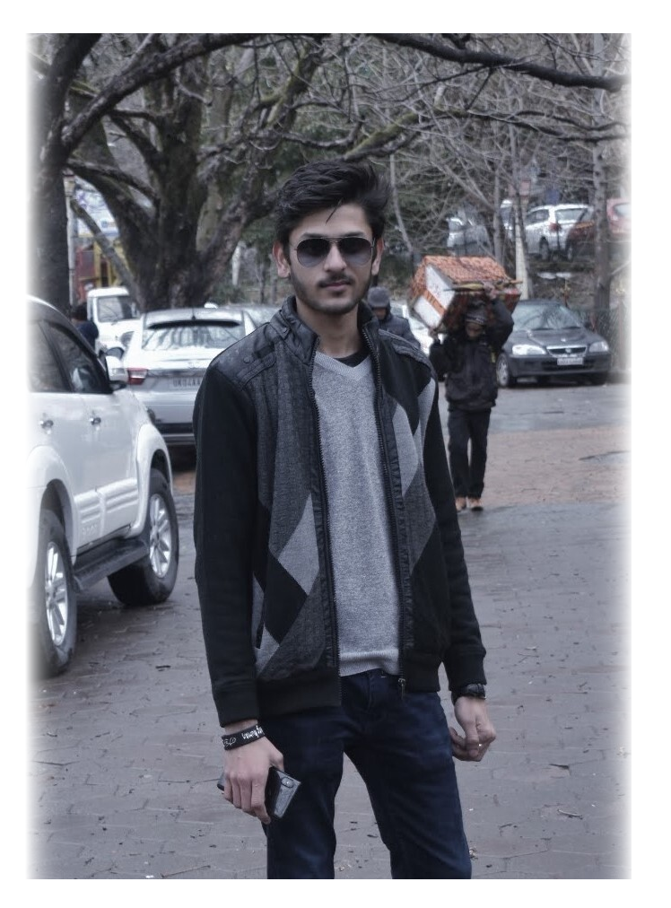

Some hats can only be worn if you're willing to be jaunty, to set them at an angle and to walk beneath them with a spring in your stride as if you're only a step away from dancing. They demand a lot of you.
The right hat may also enliven our imagination of the past...an old-fashioned cloche, a picture hat, or a toque trimmed with a pouf of polka-dotted veiling is just enough to make us feel as if we were living in another, romantic age.
Wearing hats has become like fine art.

My profile
I have always been inclined towards Analytics, from the 1st year of my under-graduation. I am involved in Entreprenurship Clubs, Social Welfare Clubs and have volunteered for conducting placement at IIT Delhi as well. To know more about my profile, refer my LinkedIn profile.